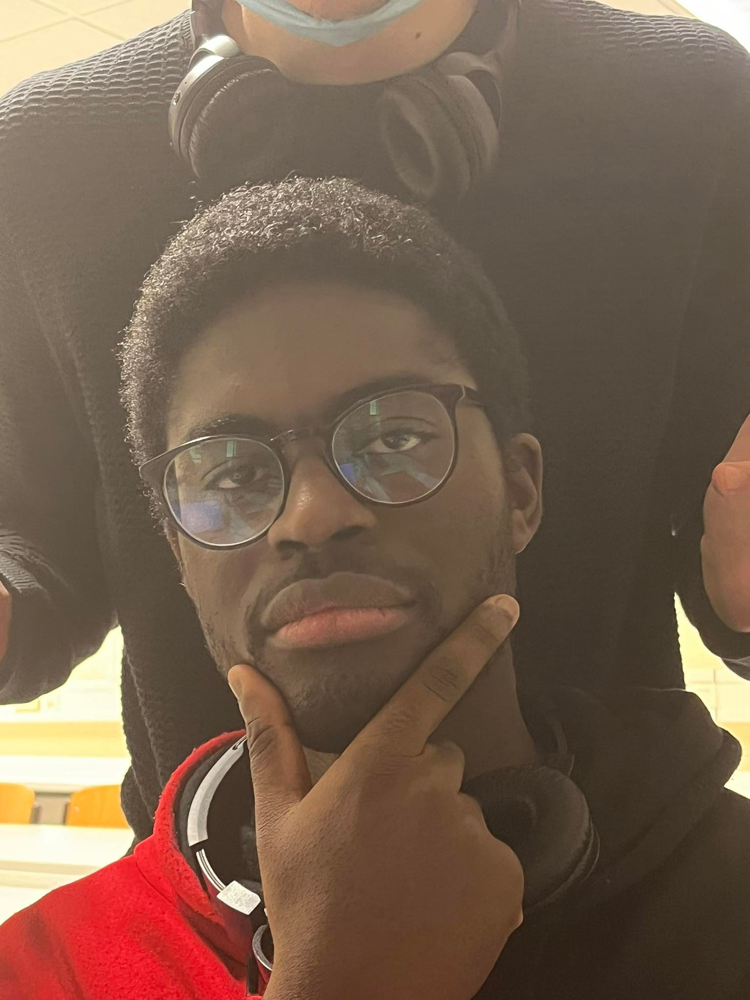
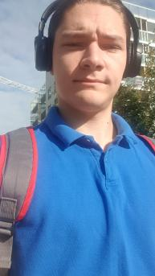
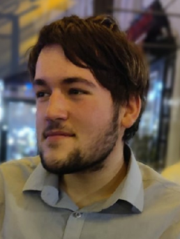
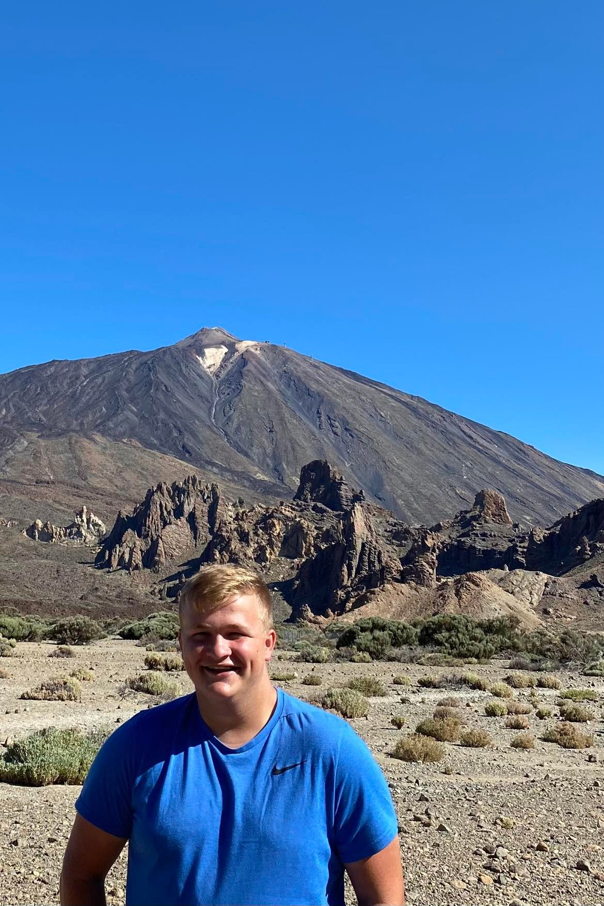

“I come from Tourism.” Currently the favorite quote of 21 year old Faisal as he studied 2 years of International Tourism before Computer science.
Due to a lack of interest and a small accident he quit tourism and switched to Computer science.
A sociable guy that can make friends with anyone (if he leaves his house) and does his best for others with a passion.
He will never say no to a bowl of ramen and will gladly ask for seconds if possible.
His hobbies are gaming, reading manga and lazing around.


The Project Manager and Hoster
Paul-Cristian Mocanu
“The end justifies the means”. Rather fitting for the 19 year old Paul.
He is known for finding solutions in problems through a rather unorthodox way.
He is your average Romanian with a solid background of programming and self proclaimed introvert.
His favorite dish Sarmale, is his raison d'être and if he can’t get it, will cook it on the spot.
His hobbies are Coding, reading and researching/understanding the fascinating fictional worlds of authors and movie-directors alike.
He also has an obsession with Adam suckler...Adam wackler..Excuse me, I meant Adam Sandler.
The Database Designer
Maximme Derolan-Dolan
“Life is like a party and you’re the piñata.”
Take this as you wish...Are you the highlight of the show?
Or does everyone want to beat you up? Pick your poison! Our 21 year old Maxime chose the sec-.
He enjoys Drawing, cycling and science as his hobbies and will make some free time to do other stuff like hanging out with his friends, learning languages and doing sports because why not.
Like Elliot he enjoys italian dishes (is this becoming a trend?).
By joining us in Computer Science, he plans to exercise his scientific and logical mind and design increasingly intelligent systems.


The programmer and web developer
Elliot Hermans
With the goal of becoming a Full Stack Developer, our 19 year old Elliot came with a solid punch of knowledge in C#.
By building pc’s and creating websites, our British chap decided to deepen his knowledge by following the same program as us in english even though he speaks Dutch.
His favorite hobbies are gaming, sim racing and having a delightful evening with his friends.
I bet if he could choose his birthplace again, he would go for Italy without hesistation by how much he likes Italian pastas, seriously.
Roles
Paul-Cristian Mocanu
Project Manager:
By assigning everyone tasks, deadlines through the process and creating the means to have meetings online, he makes sure that everyone is up-to-date with the general progress of the project.
He also helps every teammember in their own roles by giving advice and help doing the assignments tied to each person if necessary.
Elliot Hermans
Web developer:
Working on the website for the game with his previous knowledge and experience.
He helps out in other tasks related to the game code due to past experience.
Maxime de Rolland-Dalon
Data bases & design:
Works on the design and the database for the game and the side tasks around them. He also takes part in the general tasks related to the game as a whole.
Faisal Ibadina
Programmer:
Writing the code for the game and creating the displays necessary to show the user the correct informations shown.
Due to lack of experience he needs to ask his teammates for help on certain parts of the task (He comes from Tourism.)
How does a workday look like?
We meet each other on campus on the agreed time to start work. We attend a lecture from our teachers surounding an upcoming assignment related to the game or a means to keep a tab on the progress. Ex.Gitlab.
We go to the designated classrooms given to us and start a quick meeting of our own to deligate the tasks that needs to be completed that day or on a later date.
While working on the tasks it is also important to keep a good atmosphere going. So by having a chat here and there and going on breaks to refresh our minds we are able to get through the day quickly.
If there are tasks that were not completed that day, we have a meeting during the weekends online to discuss how we should tackle it.
Design choices for the website
We made the website with the future and our users in mind.
With “future” I mean the projects that will be created in the future so that they can easily be added, without having to make little to any changes in the foundation of the site.
We chose 3 colors that we feel are bounded to our values and did not want to add any more colours to overwhelm the users.
The users will be able to traverse our site fairly easy as long as they had a pc once in their lifetime.
The navigation bar gives the user options to where they want to go for their specific needs like “Download” to get the game.
The site also has an indicator on the right side to always let the user know on which page they are. A lot of sites lately focus on being modern or implement many features which may seem apealing, but can also be quite overwhelming for the average user.
We try to keep our site modern yet user friendly by making it so that the user barely has to do a thing to achieve their needs.
Our Values
Achievement
Getting a feeling of Achievement, by completing a task every day is necessary to help develop unity as a team and it will amplify our passion to reach our goals.
Fun
Having Fun is important to keep our motivation and energy levels high while working on tasks for a long duration.
Responsibility
Being responsible for your own task and notifying the group on your progress is of essence to keep everyone up-to-date with the general progress of the project.
Faith
Have faith in your teammates and ask for help when your not sure about something. Don’t be afraid to ask for help. We are here for eachother.